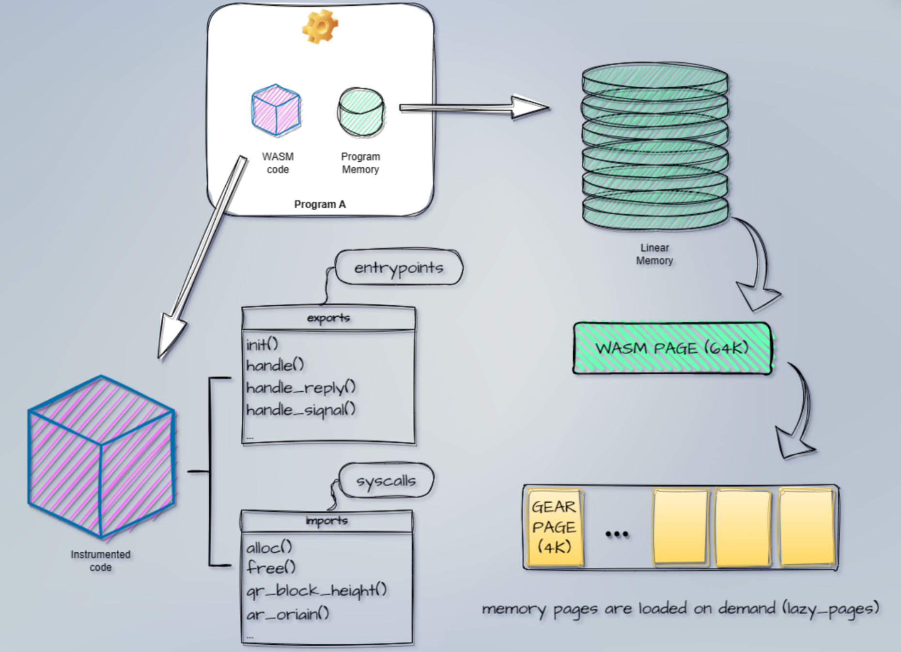

<!DOCTYPE html>
<html lang="en">

<head>
  <meta charset="utf-8" />
  <meta name="viewport" content="width=device-width, initial-scale=1.0, maximum-scale=1.0, user-scalable=no" />

  <title>Vara Network Intro, Hello World</title>
  <link rel="icon" href="./../../assets/favicon.svg" />
  <link rel="shortcut icon" href="./../../assets/favicon.png" />
  <link rel="stylesheet" href="./../../dist/reset.css" />
  <link rel="stylesheet" href="./../../dist/reveal.css" />
  <link rel="stylesheet" href="./../.././assets/styles/PBA-theme.css" id="theme" />
  <link rel="stylesheet" href="./../../css/highlight/shades-of-purple.css" />

  <link rel="stylesheet" href="./../.././assets/styles/custom-classes.css" />

</head>

<body class="site">
  <header class="site-header">
    <!-- This logo is a link only on the watching server, not the production build -->
    <a href="">
      
    </a>
  </header>
  <main class="reveal">
    <article class="slides">
      <section  data-markdown><script type="text/template">

# 状态变量与入口函数
</script></section><section  data-markdown><script type="text/template">
## 持久内存



</script></section><section  data-markdown><script type="text/template">
## 例子

合约中的状态变量

```rust
// ping pong example
static mut STATE: Option<HashMap<ActorId, u128>> = None;
```

<br/>

`gstd` 标准库

```bash
# https://github.com/gear-tech/gear
gstd/src/config.rs:static mut CONFIG: Config = Config::default();
gstd/src/async_runtime/mod.rs:static mut FUTURES: Option<FuturesMap> = None;
gstd/src/async_runtime/mod.rs:static mut SIGNALS: Option<WakeSignals> = None;
gstd/src/async_runtime/mod.rs:static mut LOCKS: Option<LocksMap> = None;
gstd/src/critical.rs:static mut HOOKS: Option<HooksMap> = None;
```

<br/>

更多例子: https://github.com/gear-foundation/dapps
</script></section><section  data-markdown><script type="text/template">
## 消息处理 API

<pba-flex left>

[msg 模块](https://docs.gear.rs/gstd/msg)
```rust
use gstd::msg;
```

[`load`](https://docs.gear.rs/gstd/msg/fn.load.html)

```rust
let payload_string: String = msg::load().expect("Unable to decode `String`");
```

[`send`](https://docs.gear.rs/gstd/msg/fn.send.html)

```rust
let id = msg::source();
msg::send(id, "Hello there", 0).expect("Unable to send message");
```

[`reply`](https://docs.gear.rs/gstd/msg/fn.reply.html)

```rust
msg::reply("PONG", 0).expect("Unable to reply");
```

</pba-flex>
</script></section><section  data-markdown><script type="text/template">
## 入口函数

| 函数 | 作用 | 支持的操作 |
| --- | --- | --- |
| init | 初始化状态 | load, send, reply |
| handle | 处理收到的消息 | load, send, reply |
| handle_reply | 处理收到的回复 | load, send |
| state | 查询状态（只读） | load, reply |
</script></section><section  data-markdown><script type="text/template">
## init

```
static mut STATE: Option<HashMap<ActorId, u128>> = None;

#[no_mangle]
extern fn init() {
    unsafe { STATE = Some(Default::default()) }
}
```
</script></section><section  data-markdown><script type="text/template">
## handle

```
#[no_mangle]
extern fn handle() {
    let payload = msg::load().expect("Failed to load payload");

    if let PingPong::Ping = payload {
        let pingers = unsafe { STATE.as_mut().expect("State isn't initialized") };

        pingers
            .entry(msg::source())
            .and_modify(|ping_count| *ping_count = ping_count.saturating_add(1))
            .or_insert(1);

        msg::reply(PingPong::Pong, 0).expect("Failed to reply from `handle()`");
    }
}
```
</script></section><section  data-markdown><script type="text/template">
## state

```
#[no_mangle]
extern fn state() {
    let state = unsafe { STATE.take().expect("State isn't initialized") };
    msg::reply(State::from_iter(state), 0).expect("Failed to reply from `state()`");
}
```


<!--


#[derive(Encode, Decode, TypeInfo, Debug, PartialEq, Eq)]
#[codec(crate = gstd::codec)]
#[scale_info(crate = gstd::scale_info)]
pub enum InitMsgs {
    Nothing,
    Probably(Option<bool>),
    Numbers {
        u8: u8,
        u32: u32,
        u64: u64,
        u128: u128,
    },
    Struct {
        name: String,
        vector: Vec<u8>,
        slice: [u8; 4],
        address: ActorId,
    },
    Tuple(String, Vec<u8>, [u8; 4], ActorId),
}

/// `()` means the contract doesn't process & reply messages at the above written entry point or
/// doesn't implement it.
impl Metadata for ContractMetadata {
    /// I/O types for the `init()` entry point.
    type Init = InOut<InitMsgs, ()>;

InOut<InitMsgs, ()>

In<InitMsgs>

在右侧合约的 metadata 多出了 init.input 的消息类型

根据这个消息类型的定义，左侧自动为我们生成了一个输入框

可以选择想要发送的消息，并且填写消息的内容

如果你想要改变其他入口函数的消息类型，可以使用类似的步骤

--></script></section>
    </article>
  </main>

  <script src="./../../dist/reveal.js"></script>

  <script src="./../../plugin/markdown/markdown.js"></script>
  <script src="./../../plugin/highlight/highlight.js"></script>
  <script src="./../../plugin/zoom/zoom.js"></script>
  <script src="./../../plugin/notes/notes.js"></script>
  <script src="./../../plugin/math/math.js"></script>

  <script src="./../../assets/plugin/mermaid.js"></script>
  <script src="./../../assets/plugin/mermaid-theme.js"></script>

  <script src="./../../assets/plugin/chart/chart.js"></script>
  <script src="./../../assets/plugin/chart/chart.min.js"></script>

  <script src="./../../assets/plugin/tailwindcss.min.js"></script>

  <script>
    function extend() {
      var target = {};
      for (var i = 0; i < arguments.length; i++) {
        var source = arguments[i];
        for (var key in source) {
          if (source.hasOwnProperty(key)) {
            target[key] = source[key];
          }
        }
      }
      return target;
    }

    // default options to init reveal.js
    var defaultOptions = {
      controls: true,
      progress: true,
      history: true,
      center: true,
      transition: 'default', // none/fade/slide/convex/concave/zoom
      slideNumber: true,
      mermaid: {
        startOnLoad: false,
        logLevel: 3,
        theme: 'base',
        themeVariables: {
          primaryColor: purple,
          primaryTextColor: white,
          primaryBorderColor: pink,
          lineColor: pink,
          secondaryColor: lightPurple,
          tertiaryColor: lightPurple,
        },
      },
      chart: {
        defaults: {
          color: 'lightgray', // color of labels
          scale: {
            beginAtZero: true,
            ticks: { stepSize: 1 },
            grid: { color: "lightgray" }, // color of grid lines
          },
        },
        line: { borderColor: ["#ccc", "#E6007A", "#6D3AEE"], "borderDash": [[5, 10], [0, 0]] },
        bar: { backgroundColor: ["#ccc", "#E6007A", "#6D3AEE"] },
      },
      plugins: [
        RevealMarkdown,
        RevealHighlight,
        RevealZoom,
        RevealNotes,
        RevealMath,
        RevealMermaid,
        RevealChart
      ]
    };

    // options from URL query string
    var queryOptions = Reveal().getQueryHash() || {};

    var options = extend(defaultOptions, {"width":1500,"height":900,"margin":0,"minScale":0.2,"maxScale":2,"transition":"none","controls":false,"progress":true,"center":true,"slideNumber":false,"backgroundTransition":"fade"}, queryOptions);
  </script>


  <script>
    Reveal.initialize(options);
  </script>
</body>

</html>
